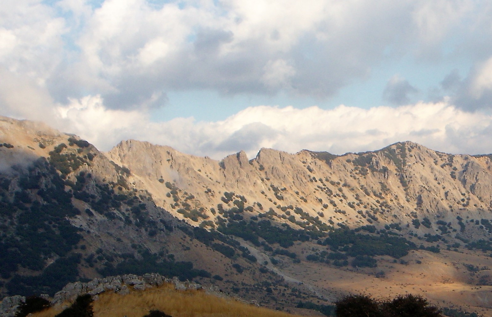

Sovrapposizione Panormide sul Flysch Numidico di Portella Colla

ITALIANO - Evidente superficie di sovrascorrimento tettonico di rocce vecchie sino a circa 220 milioni di anni, su depositi sedimentari più recenti datati sino a circa 28 milioni di anni fa.
INGLESE - I am Gaetano Ferrarelli